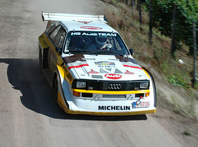
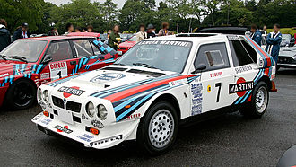
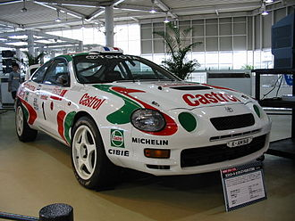
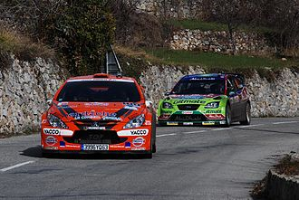

Majstrovstvá sveta v rally (ang. World Rally Championship, skratka WRC) je séria automobilových pretekov organizovaná Medzinárodnou automobilovou federáciou (FIA), ktorá pozostáva z majstrovstiev jednotlivcov a z majstrovstiev družstiev. Majstrovstvá jazdcov a tÃmov sú oddelené majstrovstvá, ale sú založené na rovnakom bodovacom systéme. Å ampionát pozostáva z pätnástich trojdenných pretekov, ktoré sa jazdia na rôznych povrchoch. Typy povrchov : Å¡trk, asfaltová cesta, sneh a ľad. Každé preteky sú rozdelené do 15 â 25 Å¡peciálnych jázd (rýchlostných skúšok), ktoré sa jazdia na Äas, na uzavretých cestách. Å portovo technické pravidlá sú spravované organizáciou International Sportsworld Communicators.
WRC vzniklo z Medzinárodnej rally, ktorej väÄÅ¡ia ÄasÅ¥ predtým patrila do Európskej rally. Rely automobily sú zvlášť upravené vozidlá, vyvinuté zo skupiny A, ktorá nahradila zaniknutú skupinu B. Rely autá sú najÄastejÅ¡ie dvojlitrové Å¡tvorvalce s turbodúchadlom, pohonom vÅ¡etkých 4 kolies, sekvenÄnou prevodovkou, aerodynamickými ÄasÅ¥ami, a ÄalÅ¡Ãmi doplnkami, ktoré zdvÃhajú cenu rely auta na hodnotu okolo 1 milióna US$. WRC zriaÄuje tiež podporné majstrovstvá, majstrovstvá sveta v rely juniorov (angl. Junior World Rally Championship, skr. JWRC) a Production World rally championship (skr. PWRC), ktoré sú neregulárne na rovnakých súťažiach a skuÅ¡kách ako WRC, ale s rozdielnymi pravidlami. Production a autá juniorov jazdia vždy až po WRC jazdcoch.
 V 80. rokoch sme videli Skupinu 2 (autá s pohonom na prednú nápravu) a stále populárnejÅ¡iu Skupinu 4, ale obe tieto skupiny boli nahradené skupinou B (autá s pohonom na vÅ¡etky 4 kolesá). FISA (medzinárodná federácia automobilového Å¡portu) schválila pohon vÅ¡etkých Å¡tyroch kolies v roku 1979, ale väÄÅ¡ina výrobcov verila že je to prÃliÅ¡ zložité nato, aby to uspelo. Potom Äo Audi nasadilo svoje nové Quattro, ktoré už malo náhon na vÅ¡etky 4 kolesá, do rely s neodklaným úspechom, zaÄali aj ostatný výrobcovia svoje projekty ohľadom pohonu vÅ¡etkých kolies. Pravidlá Skupiny B boli uvedené v sezóne roku 1982. Audi vyhralo titul konÅ¡truktérov v rokoch 1982, 1984 a titul jazdca v rokoch 1983 (Mikkola) a 1984 (Stig Blomqvist). Audi malo aj ženskú jazdkyÅu francúzsku Michèle Mouton, ktorá bola v sezóne 1982 veľmi blÃzko titulu pre jazdca, bohužiaľ sa musela uspokojiÅ¥ z druhým miestom za Oplom (Röhrl). V roku 1985 to vyzeralo tak, že titul majstra sveta v rely zÃska Vatanen na svojom Peugeote 205 T16 ale poÄas rely ArgentÃna mal veľmi Å¡karedú nehodu, ktorá ho prinútila sa iba pozeraÅ¥ na to ako mu jeho tÃmový kamarát Timo Salonen preberá titul. Talian Attilio Bettega mal niekoľko nehôd so svojou Lanciou 037 a pri nehode poÄas Francúzskej rely zomrel.
 Sezóna 1986 sa zaÄala impozantnými zmenami FÃni Henri Toivonen a Alén v ich Lancia Delta S4 s novým turbom, ktorá mohla zrýchliÅ¥ z 0 â 100 km/h za 2,3 sekundy na Å¡otolÃnovom povrchu. Sezóna vyzerala, že bude dramatická. PoÄas Portugalskej rely boli zabitý 3 diváci a vyÅ¡e 30 ÄalÅ¡Ãch bolo zranených potom Äo Joaquim Santos stratil kontrolu nad svojÃm autom Ford RS200. Neskôr v priebehu francúzskej rely zahynul majstrovský Henri Toivonen a jeho spolujazdec Sergio Cresto potom ako sa zrútili z útesu. Iba po niekoľkých hodinách po tejto autonehode Jean-Marie Balestre a FISA sa rozhodli zmraziÅ¥ ÄalÅ¡Ã vývoj áut skupiny B. Tento vývoj bol zakázaný od roku 1987.
 Ako plánovaná skupina S bola tiež zakázaná, pravidlá skupiny A sa stali Å¡tandardné až do roku 1997. Oddelené majstrovstvá skupiny A boli organizované ako ÄasÅ¥ WRC od roku 1986, kedy Å¡védsky jazdec Kenneth Eriksson vyhral titul majstra sveta so svojÃm autom Volkswagen Golf GTI 16V. Lancia bola najrýchlejÅ¡ia v adaptovanà resp. dokázala ako jediná reagovaÅ¥ na zmenené pravidlá, a kontrolovala celé dianie svetovej rely so svojim autom Lancia Delta Integrale. S týmto autom tiež vyhrala Å¡esÅ¥ titulov majstra sveta tÃmov a to v rozpätà od 1987 po 1992. Jazdci Kankkunen a Miki Biasion zÃskali dvakrát titul majstra sveta práve s Integrale. v roku 1990 sa na scéne rely objavili japonské automobilky Toyota, Subaru a Mitsubishi, ktoré sa zároveÅ aj stali horúcimi kandidátmi na majstrovské tituly. Å paniel Carlos Sainz jazdiaci pre stajÅu Toyota vyhral v rokoch 1990 1992 majstrovský titul jazdcov s autom Toyota Celica GT-Four. Kankkunen prestúpil do tÃmu Toyota v sezóne 1993 a hneÄ na to vyhral svoj Å¡tvrtý rekordný titul, a Toyota vyhrala svoj prvý titul pre tÃm. Francúz Didie Auriol priniesol pre tÃm Äalšà úspech v roku 1994 a neskôr Subaru a Mitsubishi pokraÄovali v úspechoch japonských znaÄiek. V roku 1995 vyhral titul jazdca Colin McRae jazdiaci za tÃm Subaru, ktorý následne vyhral titul tÃmov tri roky v rade. FÃnsky jazdec Tommi Mäkinen jazdiaci s Mitsubishi Lancer Evolution vyhral titul majstra sveta Å¡tyrikrát a to od roku 1996 do roku 1999. V roku 1998 Mitsubishi vyhralo tiež titul tÃmov.
 Od sezóny 1997 boli prijaté pravidlá aj pre Svetové rely autá, ako plánovaná náhrada za Skupinu A, (len úspeÅ¡ne podniky ako Mitsubishi mali stále vyhovujúce auto, ktoré spĺÅalo aj najnovÅ¡ie pravidlá, až pokiaľ neschválili Lancer Evolution WRC pre sezónu 2001). Po úspechu Mäkinena a japonských znaÄiek, francúzsky Peugeot pripravil veľmi úspeÅ¡ný návrat do kolotoÄa WRC. FÃn Marcus Grönholm vyhral titul majstra sveta, hneÄ vo svojej prvej celej sezóne a Peugeot zároveÅ vyhral titul tÃmov. AngliÄan Richard Burns vyhral titul v roku 2001 so svojÃm Subaru Impreza WRC, ale Grönholm so svojÃm Peugeotom zobrali oba tituly v roku 2002 späť. V sezóne 2003 sa majstrom sveta stal nór Peter Solberg (jazdiaci na Subaru) a Citroën pokraÄoval v úspechoch francúzskych znaÄiek. Sébastien Loeb (jazdiaci za Citroën) pokraÄoval v kontrolovanà nasledujúcich sezón so svojÃm Citroënom Xsara WRC. Citroën vyhral titul tÃmov trikrát po sebe, a Loeb vyrovnal Mäkinenov rekord 4 tituly majstra sveta v rade. Po mnohých sezónach na vrchole bez akýchkoľvek titulov Ford koneÄne vyhral titul tÃmov v sezonách 2006 a 2007 s jazdcami Grönholm a Miko Hirvonen.